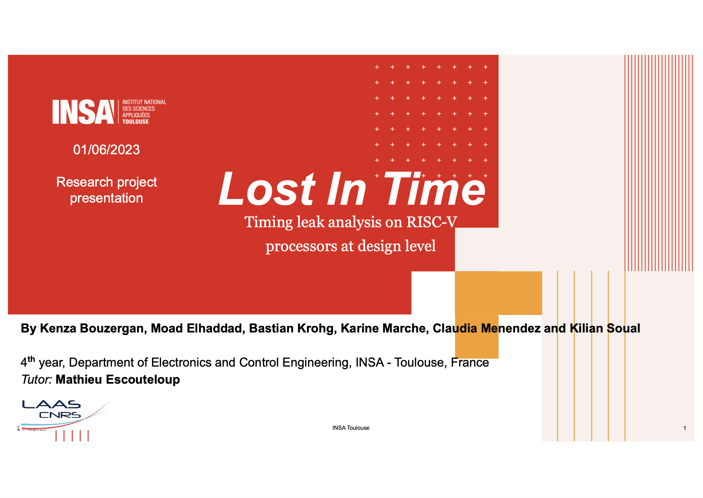

INSA Toulouse - RISC-V Research Project
Research and simulation of timing leak vulnerabilities of a RISC-V architecture for a research project conducted at INSA Toulouse for the PIR - Projet d'Initiation à la Recherche in 2023.
Project Details / Background
Timing leak vulnerabilities is a well-known computer architecture weakness that can be targeted by a series of attacks to extract information about what the processor or computer is manipulating. On this project, working with a group of co-students and with our mentor Mathieu Escouteloup, we developed a tool to analyze and visualize some of the weaknesses of the RISC-V architecture, which, as an Open Source platform, is gaining more and more traction worldwide in a variety of sectors and real-world applications.
Want more details?
Image Gallery

Our presentation of the project, presented at INSA Toulouse in May 2023.